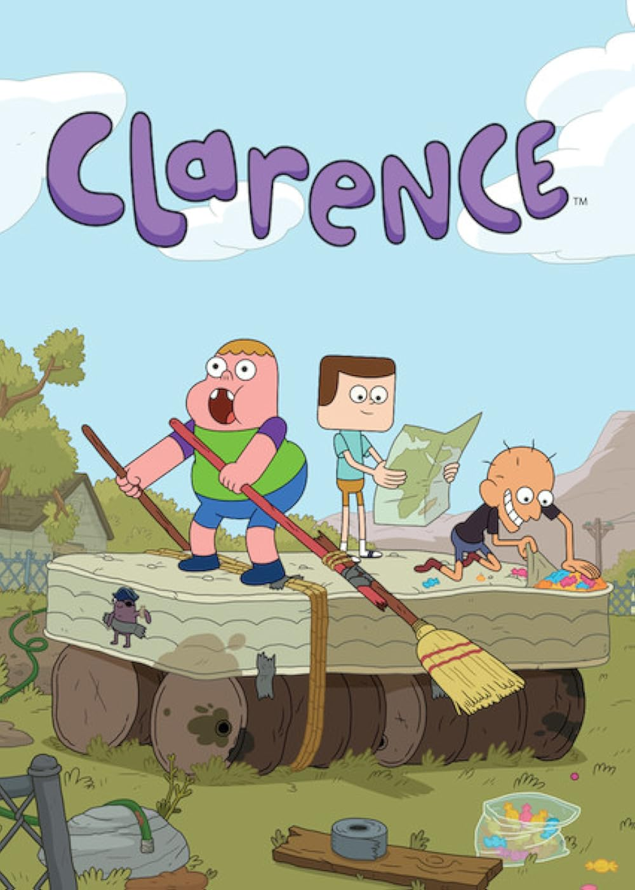

Clarence es el alma de la diversión simple, ese niño que simplemente disfruta de la vida sin preocuparse por nada. Con un corazón enorme y una imaginación que no tiene límites, Clarence te recuerda lo que era ser un niño sin preocupaciones. Creado por Skyler Page, este show nos muestra el día a día de Clarence, quien vive en un pequeño pueblo con su mamá y su amigo Jeff. Las historias giran en torno a las situaciones cotidianas que, en manos de Clarence, se transforman en pequeñas aventuras emocionantes. Es ese tipo de serie donde los problemas grandes se ven más pequeños cuando se les enfrenta con una actitud positiva y algo de creatividad. Es fresquito, optimista y, sobre todo, es un homenaje a esos días de pura alegría sin tantas complicaciones.
Clarence tiene un estilo de animación que rompe con lo tradicional. Los colores son cálidos, los trazos son simples y deliberadamente imperfectos, lo cual refuerza la sensación de estar viendo el mundo a través de los ojos de un niño. No hay personajes "bonitos" en el sentido clásico: todos son únicos, con formas desproporcionadas o extrañas, lo que hace que el show sea más auténtico y real. Esta decisión estética no es casual; al contrario, acompaña el tono de la serie, que celebra lo ordinario, lo imperfecto y lo humano.

Una de las mayores fortalezas de Clarence está en su trío principal: Clarence, Jeff y Sumo. Cada uno representa una forma distinta de ver el mundo. Jeff es estructurado, lógico y un poco neurótico; Sumo es caótico, impulsivo y rebelde; y Clarence es el corazón equilibrante entre los dos. Esta dinámica le da a cada capítulo una chispa distinta, ya que la combinación de sus personalidades garantiza que cualquier situación —por más simple que sea— termine en algo inesperado. Es como ver tres energías totalmente distintas intentando coexistir... y divirtiéndose en el intento.
A diferencia de muchas otras series animadas, Clarence muestra diferentes tipos de familias sin estereotipos forzados. Desde la madre soltera de Clarence, hasta los padres de Jeff y otros personajes secundarios, la serie representa con naturalidad la diversidad familiar. Esto no se hace de manera forzada ni didáctica, simplemente es parte del mundo del personaje. Así, Clarence se convierte también en una ventana amable hacia cómo puede ser la vida real de muchos niños, sin perder su enfoque en la diversión y la aventura.
En Clarence, no hay que esperar grandes batallas, superpoderes ni giros dramáticos. La magia del show está en cosas como una fiesta de pijamas, una tarde en el parque o un paseo al supermercado. Cada episodio convierte un evento mundano en una historia entrañable, con risas, ocurrencias y, a veces, pequeñas lecciones. La serie nos recuerda que los mejores recuerdos muchas veces nacen de lo simple, y que no hace falta nada espectacular para vivir una gran aventura… solo ganas de disfrutar el momento.